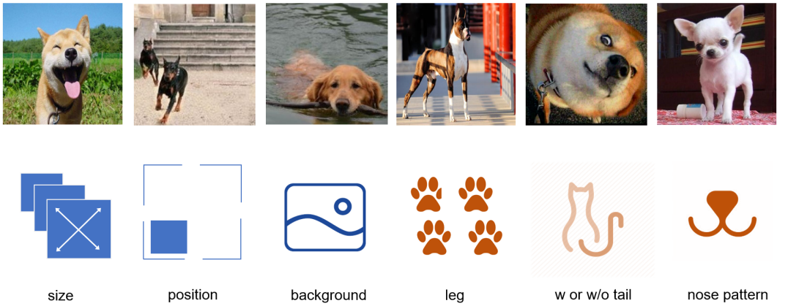
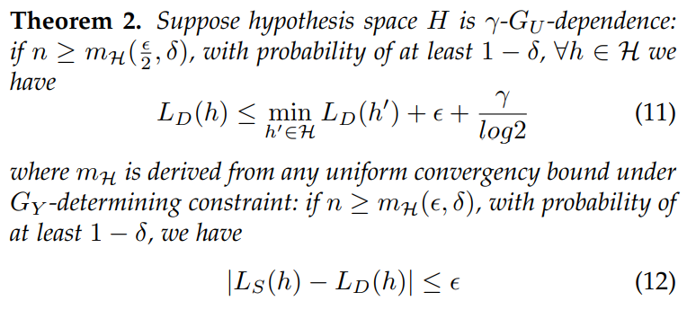
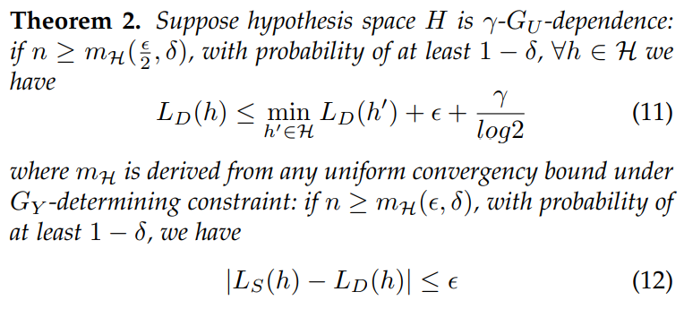
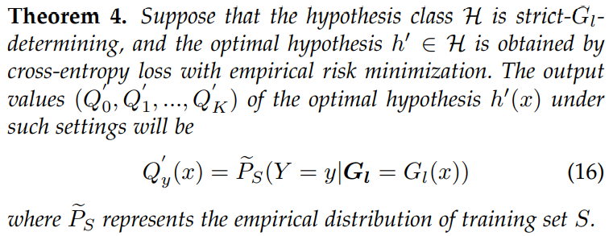
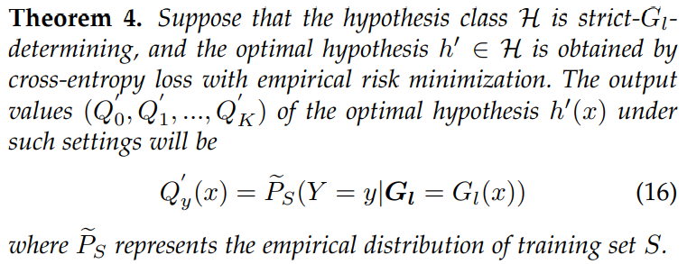
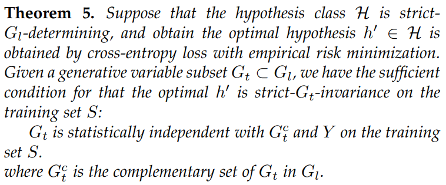
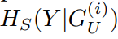
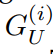
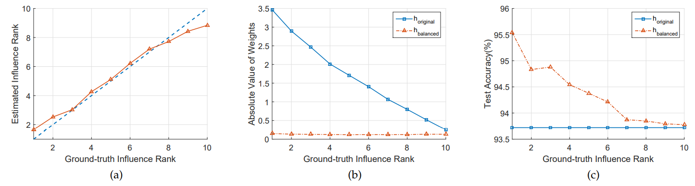
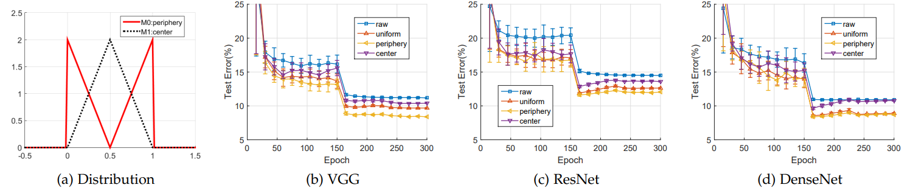

A Generalization Theory based on Independent and
Task-Identically Distributed Assumption
Introduction
Existing generalization theories analyze the generalization performance mainly based on the
model complexity and training process. The ignorance of the task properties, which results
from the widely used IID assumption, makes these theories fail to interpret many generalization
phenomena or guide practical learning tasks. In this paper, we propose a new Independent and
Task-Identically Distributed (ITID) assumption, to consider the task properties into the data
generating process. The derived generalization bound based on the ITID assumption identifies
the significance of hypothesis invariance in guaranteeing generalization performance. Based on
the new bound, we introduce a practical invariance enhancement algorithm from the perspective
of modifying data distributions. Finally, we verify the algorithm and theorems in the context
of image classification task on both toy and real-world datasets. The experimental results
demonstrate the reasonableness of the ITID assumption and the effectiveness of new generalization
theory in improving practical generalization performance.
The main contributions of this work can be summarized in four-fold:
-
Data generating assumption: we introduce a new ITID assumption to the data generating process,
which enjoys two advantages: (1) it is more realistic to fit most real-world tasks;
(2) it well considers the task property and provides prescriptive guidance for generalization improvement.
-
Theoretical generalization bound: we derive taskrelated generalization bound based on the ITID assumption in both special and general cases.
The new generalization bound well explains many phenomena conflicting with the existing generalization theories.
-
Algorithmic prescriptive guidance: we design a data augmentation algorithm with a theoretical
guarantee to improve the generalization capability by enhancing model invariance. The algorithm
serves as one inspiring example to leverage the proposed ITIDbased theory to improve generalization
performance in practical tasks.
-
Extensive experimental validation: we conduct experiments on both the toy data and the real-world
Cifar-10 dataset to validate the derived task-based generalization bound as well as the
effectiveness of the invariance enhancement algorithm in improving generalization performance.
Motivation
The IID assumption suffers from two recognized issues: (1) it does not hold in most cases due to the poor coverage of training data and the complexity of real-world tasks. [1] demonstrated through experiments that most of the existing datasets are non-identically distributed. [2] found that high correlations exist in both temporal and spatial samples. Applying IID-based theories on these nonIID tasks has demonstrated devastated performance [1]. (2) The IID assumption derives a task-free generalization bound which fails to guide the practical learning tasks. One example comes from data augmentation, which demonstrates its effectiveness in improving generalization performance while adds unrealistic data and inevitably changes the distribution of the training set [3] [4]. Traditional IID-based generalization theories fail to explain the improved generalization from changed data distribution or theoretically guide the new design of data augmentation solutions.
Our new generalization theory provides a solution to both problems: (1) The new data generating assumption is addressing more general tasks and expected to be satisfied in most cases. We evaluate the generalization performance based on model capability instead of on the deviated data distribution, making it fitting to different data generating scenarios. (2) By introducing task-correlated generative variables into the data generating process, we succeed to examine the correlation between generalization performance and task properties. The derived generalization bound is related to both the task complexity and model invariance capability. Furthermore, based on the task-related generalization bound, we provide prescriptive guidance to improve generalization performance in practical tasks.
Main Theoretical Results

Fig.1 Examples of (Top row): images belonging to the same category; and (Bottom row): generative variables controlling
the image generating process.

Fig.2 Data generating process on: (a) original instance space (b) generative variables; (c) task-correlated and -uncorrelated
generative variables.
 

 


EXPERIMENTAL VALIDATION
The application of the proposed generalization theory involves with three key conclusions:
(1) Influence measure. Theorem 4 proves that the conditional entropy in the training dataset 
can be used to measure the influence of  on model predictions. (2) Invariance acquisition.
Theorem 5 proves to obtain model invariance over generative variables by balancing the distribution
of the training set. (3) Generalization improvement. Theorem 2 and Theorem 3 together prove that
model will have a lower generalization bound by enhancing invariance over task-uncorrelated
generative variables. In this section, we design experiments on both toy data and a real-world image
dataset to validate these conclusions as well as demonstrate the effectiveness of the proposed theory
in improving generalization performance.
Influence Measure
As shown in Fig.3, we construct
a toy dataset satisfying the proposed ITID assumption: the
testing instances are sampled from different distributions
but maintain the same marginal distribution over the task-correlated generative variables.

Fig.3 Illustration to generate a toy dataset satisfying ITID
assumption.
Fig.4(a) compares the estimated ranks (y-axis) to the
ground-truth influence ranks (x-axis). It can be seen the
estimated influence rank curve is close to the reference line
y = x, which means that accurately approximates the real influence of task-uncorrelated generative
variables. Note that the estimated-influence rank slightly
deviates from the reference line when the influence rank
is lower than 8. This result is possibly due to the very small
influence of these input features (the influence weights are
generally between [0, 0.8] for rank 8 ∼ 10), which makes
their relative ranks unstable in different toy datasets.

Fig.4 Validation experimental results averaged over 100 runs: (a) the estimated influence ranks by (y-axis) v.s.
the ground-truth influence ranks by the absolute weight values; (b) the changes of the absolute weight values before and
after Balance operation; (c) test accuracy before and after Balance operation.
Invariance acquisition
Fig.4(b) shows the absolute weight values learned in
models before and after balancing modification (annotated
as horiginal and hbalanced, respectively). To guarantee a
consistent experimental discussion, we keep the x-axis as the
same in Fig.4(a). It is shown that in spite of the very different
weight values in the original model, all task-uncorrelated
generative variables obtain the model weight of almost 0
after balanced modification. This validates Theorem 5 that
the Balance operation can help model acquire invariance
over target generative variables.
Generalization improvement
According to Theorem 2 and Theorem 3, a model will have
lower generalization bound when enhancing invariance
over task-uncorrelated generative variables. To validate
this, following the same settings in the above experiments,
we examine and compare the performance of the trained
horiginal and hbalanced in the testing dataset. The result is
shown in Fig.4(c). It can be seen that after balancing the
task-uncorrelated generative variables, the learned models
achieve consistently improved testing performance. Moreover, the more influence the task-uncorrelated generative
variable (with higher influence rank), the more improvement hbalanced can achieve after enhancing the variance
Improvement for Data Augmentation
Note that the proposed generalization theory is based on the ITID assumption, which requires a unique marginal distribution
over the task-correlated generative variables. However, many data augmentation solutions like random erasing are potential
to change the distribution of task-correlated generative variables, which decrease the generalization performance.
The probability density curves of M0 and M1 are shown in Fig.5(a). It is obvious that
the erasing following M0 will appear more at the periphery,
while erasing the following M1 will appear more at the
center of images and have a higher probability to change
the marginal distribution of task-correlated generative variables

Fig.5 Test errors of different random-erasing settings
Fig.5(b)-(d) show the test error in four experimental settings: (1) raw, the original training set without data
augmentation; (2) uniform, the random erasing method with traditional uniform distribution on the erasing position;
(3) periphery, the random erasing method with position parameters following M0; and (4) center, the random erasing method
with position parameters following M1. As can be seen, when restricting the erasing positions near the periphery area,
the performance of periphery consistently outperforms the other random erasing settings. While, center achieves inferior
performance than uniform, further validating that affecting the distribution of task-correlated generative variables will
violate the ITID assumption and tends to deteriorate the generalization performance.
Reference
[1] M. Swaminathan, P. K. Yadav, O. Piloto, T. Sjoblom, and I. Cheong, ¨ “A new distance measure for non-identical
data with application to image classification,” Pattern Recognition, vol. 63, pp. 384–396, 2017.
Y. Shi, W. Li, Y. Gao, L. Cao, and D. Shen, “Beyond iid: Learning to combine non-iid metrics for vision tasks,”
in Thirty-First AAAI Conference on Artificial Intelligence, 2017.
H. Zhang, M. Cisse, Y. N. Dauphin, and D. Lopez-Paz, “mixup: Beyond empirical risk minimization,” 2018.
Z. Zhong, L. Zheng, G. Kang, S. Li, and Y. Yang, “Random erasing data augmentation,” arXiv preprint arXiv:1708.04896, 2017.
|